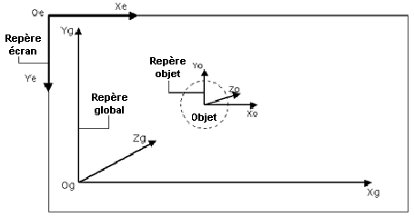
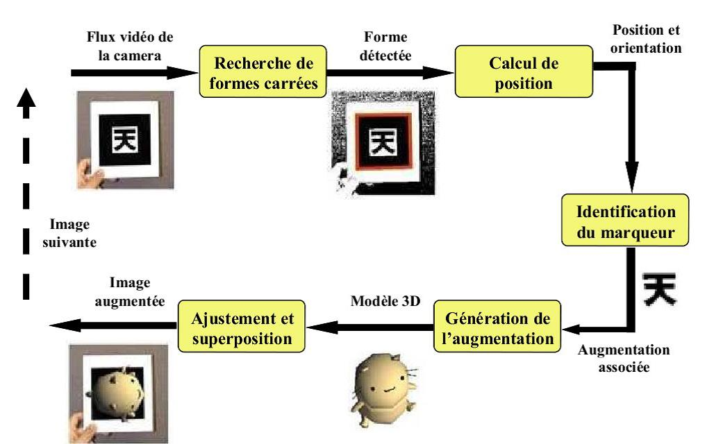

Experimentation

Algorithme de détection
Cette forme de détection a un grand défaut, elle dépend grandement de la qualité du pattern utilisé. Si le pattern est abimé ou bien caché celui-ci ne pourra être détecté, aussi le pattern ne peut être reconnue que selon certains angles de vue. La qualité de la caméra entre aussi en jeu, en cas de mouvement c’est la vitesse de détection de la camera qui est prise en compte.
Le Nuage de Points
La triangulation optique via un laser permet l’obtention du volume de l’objet qui sera suivi du placement d’un nuage de points.
Exemple de nuage de points : château de Monmouth
Notre nuage de points est utiliser uniquement pour obtenir les données volumétriques de l’aspirateur dans un repère sphérique 
( utilisé à moitié car l’objet est posée sur une surface ).